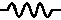
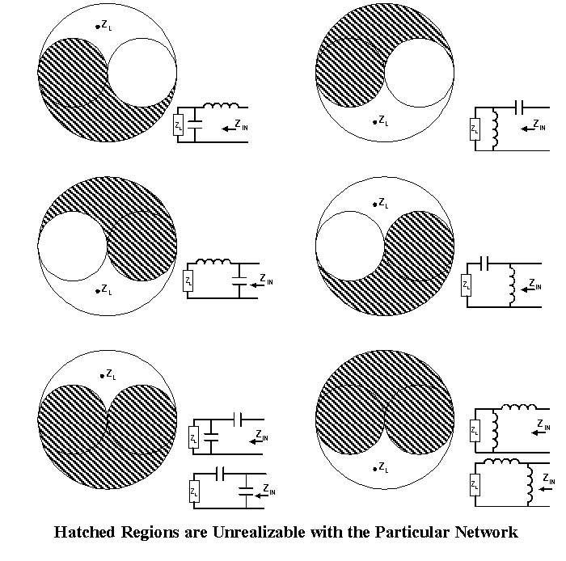

| QuickSmith Web Version 1.0.0 Frequently Asked Questions |
Following are answers to some of the top questions I receive regarding QuickSmith.
QuickSmith is a Smith Chart based linear circuit simulation program.
Some of the features offered by this program are listed below:
- Ladder network, elements are loaded using drag drop method.
- Open and Save functions for schematic files
- Impedance matching
- Frequency/component sweep
- Load impedance interpolation/extrapolation for frequency dependent loads
- Q factors taken into account for network components
- Amplifier design/analysis using gain/noise circles
- Insertion loss and S21 graphs
- Transmission line parameter calculations
- Constant Conductance, VSWR and Q circles
- Import and Export of data files
- Help files with solved examples of network matching and amplifier design
First you will notice there are two windows one on the left is the Smithchart window another and on the right is Schematic
In the Schematic window, click on the resistor  icon and drag and drop it in the white slot in the ladder above, a Message box will pop up and enter a number and hit return
Notice that the blue dot on the Smith chart moves to an appropriate location. Now you can you use spin(up/down) button to navigate on the Smith chart
To change the step size double click on the component value in the schematic window. Mobile users may tap on the component value, and enter s or S to change the setp size.
The load (L) on the left side of the Schematic window is the device you are looking into. It is very similar to a Network analyser with the Port 1 cable connected to a device. The display end of the network analyzer is the right side (Zin)
Frequency MHz, Resistor Ohms, Inductor nH, Capacitor pH.
To change the load resistance or reactance drag the RX icon or the GAMMA icon icon on load (L) slot and enter the value in the message box .
In the Schematic window enter the Load resistance and reactance. Next enter the operating frequency[Mhz] in the freqency input box. Depending upon your Load location use the Matching aid shown below to determine the network to get to 50 Ohms, alternatively web users can make use of the new "Matching Tip" feature that will appear in the schematic section when the mouse pointer is hovered on the blue dot. The goal is to navigate the blue dot on the Smith chart to the circle going through the center and then use the last component to bring to the 50 Ohm point. See the Large Signal Amplifier Design Example in the help section.

Use the Marker in the SmithChart window display menu to set a target marker.
To get to the Amplifier design window click on the Amplifier design menu or the "Chart icon". You will see two Smith charts. One for the source plane and another for the load plane. You can use this to optimize Gain and noise trade offs. See the "Small Signal Amplifier Design" Example in the Help section.
Insertion Loss window gives you the insertion loss of the network. It assume load and source impedance is 50 (characteristic) Ohms. To set frequency sweep parameters, use "Options" menu in the navaigation bar.
First set frequency/component sweep parameters, use "Options" menu in navaigation bar. Click on "ShowSweep" menu "Generate" item to sweep.
On the menu of Insertion Loss or Amplifier Design window click on Back, on small screen devices like a phone or tablet, you will see BackM, this will open a new window instead of going back to the parent window. This is due to security limitation on the phone.
Move you mouse pointer to the Smith chart and double click your right mouse button.
Due the limited screen width and other limitations of mobile devices, we have restricted some features in that mode as listed below:
1) No file access
2) Q circles and Insertion loss features are not available
3) Only half of the element slots(6) are available
4) Element designators are omitted
4) To avoid interference with the drag operations, we have limited touch interactions to bare minimum
5) "Matching Tip" and "ToolTip" featurea are not available in Mobile mode.
To avoid losing data in between refresh, use "Save Session" in the File menu. This saves the data to the local memory, a new refresh will check if there is anything saved and load it if so.
"New Session" removes any saved session and "Restore Session" recalls the last saved session.
External data can be imported by using the Import feature under Data menu in the Navbar. The data is stored in JSON format. Example files can be found in the gam folder. To create "gam" files "Generate" a Sweep and export the data using the "Export Command".
i) Electronic Applications of the Smith Chart, Phillip H. Smith, Robert E. Krieger Company, Malabar, Florida
ii) Hewlett-Packard Application Note 970, February 1978
iii) Microwave Transistor Amplifiers, Guillermo Gonzalez, Prentice-Hall, 1984.
iv) QEX July/August and Sep/Oct. 2010, Using QuickSmith: Part 1 and Part2, By Harold Kinley, WA4GIB.